ChronicleRec：预训练带时间锚点的长期用户表征
ChronicleRec 研究如何把很长的用户行为历史压缩成可缓存、仍保留时间顺序的短 token 序列，再迁移到推荐与广告排序模型。一作 Chengkai Huang 来自新南威尔士大学，腾讯的 Yubin Sheng、Liang Guo、Haoxi Liu 同为共同一作；合作作者包括 Lina Yao 等。论文于 2026 年 9 月 11 日提交，本文依据 ChronicleRec 原论文 v1 的完整九页内容整理。原文未发现独立代码入口。它的主要价值在于把长期兴趣组织成能够跨候选复用的时间记忆，同时明确承认压缩与全历史注意力之间仍存在精度差距。
数千次历史行为直接进入排序模型代价过高，截断又会丢失长期信号；按候选检索历史需要重复支付在线成本，而把查询放在序列尾部并采用双向编码的压缩方式，容易产生无序、冗余且忽略时间结构的摘要。
1. 背景和问题
1.1 长期历史为什么难以直接进入排序
工业推荐中的用户兴趣不是由最近一次点击独立决定的。随着用户在平台上持续浏览、点击或购买，行为序列会累积跨越数月甚至数年的信息。近期历史更接近此刻的需求，远期历史则可能保留短窗口中没有出现的稳定偏好。论文引言将两者看成有不同时间分辨率要求的信息来源：近期事件值得逐项保留，较远的行为可以更粗粒度地聚合。这个区分既是统计假设，也是后续压缩资源分配的依据；如果把所有历史都等比例压缩，可能一边浪费容量描述陈旧细节，一边损失最有预测力的近期变化。
排序环节通常必须在一个请求里对很多候选分别打分。完整自注意力能够让历史事件之间相互作用，但历史变长时，注意力开销随序列长度呈二次增长。引言提到单请求可能需要评估数百个候选，因此长期行为建模不只是单个模型能否放进显存的问题，还涉及同一份历史在候选维度上被反复处理的代价。论文希望把可以共享的用户历史表征前移，使候选进入系统时主要面对紧凑的记忆。由此，成本讨论有两层：离线怎样训练压缩器，在线怎样避免再次计算同一用户的超长序列；这两层需要不同证据，不能用训练时间直接替代在线延迟。
最直接的降本手段是只保留最近一段历史。它不需要额外的压缩学习，也能适配固定长度的排序输入，但较早行为被删除后便无法参与候选判断。论文的短窗口基线实际只使用最近一百次行为，而所谓完整历史基线也受训练截断上限约束，并非消费用户从注册以来的全部事件。阅读“终身用户建模”时必须保留这个边界：它描述研究目标和输入来源，实验实际检验的是特定长度上限之内的信息保留能力。原始历史规模大于模型接收的历史规模，本身就说明压缩、截断和长期建模是三个需要分开的概念。
1.2 从目标相关检索到目标无关压缩
论文相关工作回顾了固定大小用户记忆、两阶段行为检索以及目标注意力兴趣提取等路线。SIM 一类方法先从长期行为中找出与候选相关的子集，再在这个子集上做更精确的注意力交互；ETA、SDIM、TWIN 等路线通过哈希、采样或改进两阶段一致性降低成本。这样的架构保留了很强的目标相关性，但选中的证据会随候选变化。候选越多，系统就越需要重复执行检索或目标相关计算。作者还担心按类别或嵌入相似度做硬检索，会偏向与目标表面相似的事件，覆盖不到用户兴趣中更宽泛、跨时间尺度的部分。这里是作者提出的结构性动机，并不意味着本文已在实验中逐个击败这些检索系统。
另一条路线是用有限数量的可学习查询，把长输入转成固定大小的潜在表示。论文把视觉语言领域的查询压缩与推荐中的缓存用户摘要联系起来，并以 VISTA 作为最接近的单次压缩基线。压缩器先生成与候选无关的用户 token，候选随后只和这些 token 交互。这样可以缓存和重复使用压缩结果，在线排序成本不再直接随原始历史长度增长。但缓存只解决复用问题，并不会自动保证摘要有足够的信息量：如果所有查询都从相同的全局输入取信息，多个槽位可能学出很相近的表征，名义上保留多个 token，实际新增信息却有限。
ChronicleRec 针对的正是这一层表示组织问题。把查询全部放在历史尾部，再允许它们双向访问整段历史，意味着每个查询都没有明确的时间边界。输出顺序通常只是查询槽位顺序，不能自然解释为由远及近的兴趣发展。作者提出让查询穿插在历史中，并限制它们只看当前位置及之前的输入。这样输出仍然是短序列，但其中的位置有了具体含义：一个查询表示到某个时间锚点为止的历史，而不是与其他查询共享完全相同感受野的全局摘要。由长序列到短序列的转换因此保留了时间组织，而不仅是长度变化。
1.3 四个问题如何约束研究目标
引言把挑战拆成四项。首先是不同时间段应以怎样的粒度压缩；其次是压缩怎样保留因果顺序，让每个摘要只描述其锚点之前的上下文；再次是怎样避免一个压缩通道被近期行为主导，使远期兴趣有单独的表达空间；最后是历史摘要怎样与当下预测任务建立联系。最后一项尤其关键，因为能概括过去不等于能预测现在。论文将这一步称为 Chronicle Alignment：隐藏一段近期行为，要求较旧的上下文产生对近期目标有预测力的表示。这使压缩器的学习目的从泛化的历史重构收敛到推荐所关心的近期意图信号。
四个问题相互关联，但对应的机制不能混为一谈。近因感知合并决定哪些原始事件被压缩到同一个输入 token；时间锚点和因果掩码决定每个输出 token 可以看到哪些输入；多时间跨度分支改变整个压缩器可用的最近历史范围；对齐损失则决定这些表示通过什么监督获得预测能力。前两项规定信息通路，第三项干预输入覆盖，第四项提供优化方向。若只增加查询数而不改变感受野或训练目标，理论上仍可能得到多个重复摘要，因此本文强调的是这些设计的组合，而非把用户向量简单改为多个向量。
这项工作与大模型方向的联系主要在表征预训练、潜在 token 压缩和迁移，而不是使用语言模型直接生成推荐结果。其输入是物品、作者或广告主、标签等离散字段，输出用于交互概率排序。实际编码器和预测头规模、监督目标都服务于推荐任务，不能因为使用 Transformer 和 token 就将它描述成通用大语言模型。对推荐研究更直接的启发，是把长期兴趣表征训练与逐候选激活拆开：历史信息先被组织成可复用记忆，候选仍然通过目标注意力选择需要的部分，因此目标无关压缩并没有取消目标相关排序。
本文的证据目标也相对克制：在共享预测头的控制实验里，证明紧凑记忆可以接近全历史注意力，同时明显优于短窗口和单次压缩基线；再用表征分析解释为什么时间锚点有用，最后观察生产场景的业务收益。是否无损压缩、是否能适应无限增长的历史、是否在线延迟必然按训练加速倍数下降，都不属于这些实验已经充分回答的问题。把这些边界提前分清，才能正确理解后续主表中“接近”而非“超过”完整注意力的结果。
2. 方法
2.1 近因感知多粒度合并
每个用户的行为历史按从旧到新的顺序排列。行为包含物品或视频、作者或广告主、内容标签或行业等字段，映射为嵌入后形成长度为历史长度、每项维度为模型维度的矩阵；有效性掩码区分真实事件与左侧补齐。压缩器的输入只包含这份历史及掩码，不包含当前候选。它先把有效历史分成远、中、近三段，对远期使用较大窗口，中期用适度窗口，近期保留原始分辨率。原文公式一用分段定义表达这种安排：
符号解释：$\mathcal H$ 是按时间升序排列的历史，$n$ 是逐项保留的近期行为预算，$\mathrm{near}$ 为最新的这段事件，$\mathrm{mid}$ 和 $\mathrm{far}$ 是更旧的两段，具体边界还由中期长度配置决定。该式是分段定义，并不表示根据内容动态搜索最优边界；论文实现中，最大长度给定之后，源位置与池化窗口之间的对应关系可以静态构造。
符号解释：$w$ 为池化窗口，$S_w$ 为窗口覆盖的源位置，$m_i$ 是第 $i$ 个事件的有效标记，$\mathbf E_i$ 为其嵌入，$\mathbf u_w$ 为合并后 token，$\widetilde m_w$ 标记窗口中是否至少有一个真实事件。分母取至少一避免空窗口除零，掩码使补齐向量不会污染真实行为均值。合并后的窗口仍按时间排列，形成 $\mathbf U\in\mathbb R^{M\times d}$，其中 $M$ 是合并长度，$d$ 为模型维度。
合并的非均匀性来自时间位置。 默认最近一百个事件不合并，中段长度四百，核大小八、步幅四；远段核大小和步幅都为十。中段窗口可以重叠，因而不能把所有段都理解为不相交分桶。短历史用户较远位置落在左侧补齐区时，相应窗口被标为无效，模型只处理实际存在的行为。这样的均值聚合不能保留窗口内所有细节，它有意识地让远期表示更粗；后续查询只能利用合并后仍存在的信息，不能恢复已经被平均操作彻底抹去的顺序差异。
2.2 因果交错查询
合并只是缩短输入。真正生成 Chronicle Tokens 的步骤，是把可学习查询穿插到合并序列之中。锚点按距离最近端的偏移布置，近期密集、远期稀疏。混合序列经过因果编码器后，只读取查询位置的隐藏状态，丢弃普通合并位置的输出。原文公式三写为：
符号解释：$\mathbf Q$ 是 $P$ 个可学习查询的集合，$[\mathbf U;\mathbf Q]_{\mathrm{interleaved}}$ 表示按锚点交错而非简单尾部拼接，因果编码器限制每个位置只能访问不晚于自己的位置，右侧竖线表示仅抽取查询位置的状态，$\mathbf C$ 即压缩结果。默认单分支使用十一个查询，输出具有明确的远近次序。
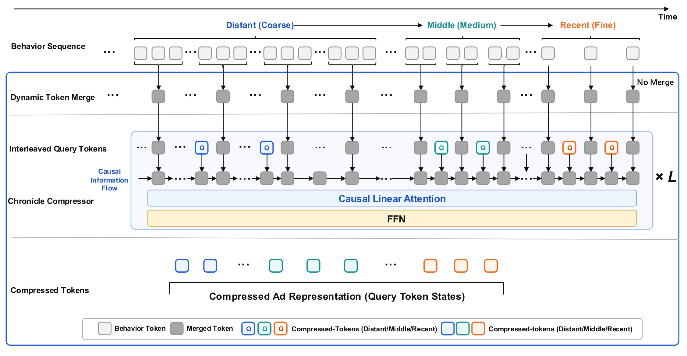
Figure 2 从上至下给出了信息如何缩短又保留时间结构。最上方的行为序列分为远、中、近三段，远期多个空心行为块归并到一个灰色块，中期归并得较少，右端近期位置标注不合并。下一层把蓝、青、橙色查询插入灰色块之间，这些颜色对应不同时间区域，而不是不同候选广告。进入编码器后，横向的因果信息流只朝时间前进方向传播；最下方输出只保留彩色查询的状态，因此下游接收的长度由查询数决定，而不是合并序列中灰色块的数量。框架中的平均合并负责输入压缩，查询读出负责最终记忆压缩，两者的职责并不相同。
图中越靠左的查询，能够读取的历史范围越早且越有限；越靠右的查询可以利用更长的历史前缀。这种感受野是嵌套的，并不保证输出彼此统计独立，但至少使不同查询不再天然拥有完全一样的全局可见范围。论文还专门处理了短历史用户的数值稳定性：补齐的合并 token 不能作为有效键，但自位置始终可见，避免远期查询遇到全部键都被屏蔽时的注意力归一化异常。这一保护不代表为用户凭空生成旧行为，只是让没有足够真实上下文的查询能稳定计算。
需要注意，图内的模块标签写的是因果线性注意力，而方法正文与实验默认配置明确写了四层、四头的因果 Transformer 编码器，并另述步幅卷积加双向线性注意力的替代实现。仅凭这张示意图不能断定所有主实验均使用线性注意力，也不能直接给默认实现冠以严格线性复杂度。本文最有支撑的机制判断是时间锚点和因果可见性，而具体高效注意力算子的主实验实现仍应以配置描述及后续代码核验为准。图也没有展示候选输入，因为压缩阶段确实不依赖候选；目标选择发生在下游预测头。
2.3 多时间跨度与 Chronicle Alignment
为了不让单次压缩总是偏向最近历史，模型并行建立多个分支。每个分支在压缩前隐藏不同长度的近期事件，遮蔽越多，就越依赖更久远的信息。分支各自拥有查询和编码器，产生自己的短前缀，再按权重缩放并拼接。原文公式四是：
符号解释：$B$ 是分支数，$\delta_j$ 是分支 $j$ 隐藏的最近事件数量，$\mathbf C^{(j)}$ 是该分支的 $P$ 个输出，$w_j$ 为分支权重，分号表示沿 token 维度拼接。默认五个遮蔽偏移为零、一百、三百、六百和一千，权重依次为一、零点五、零点四、零点三和零点二；若各分支均输出十一个 token，拼接长度为五十五，而不是仍然只有十一个。
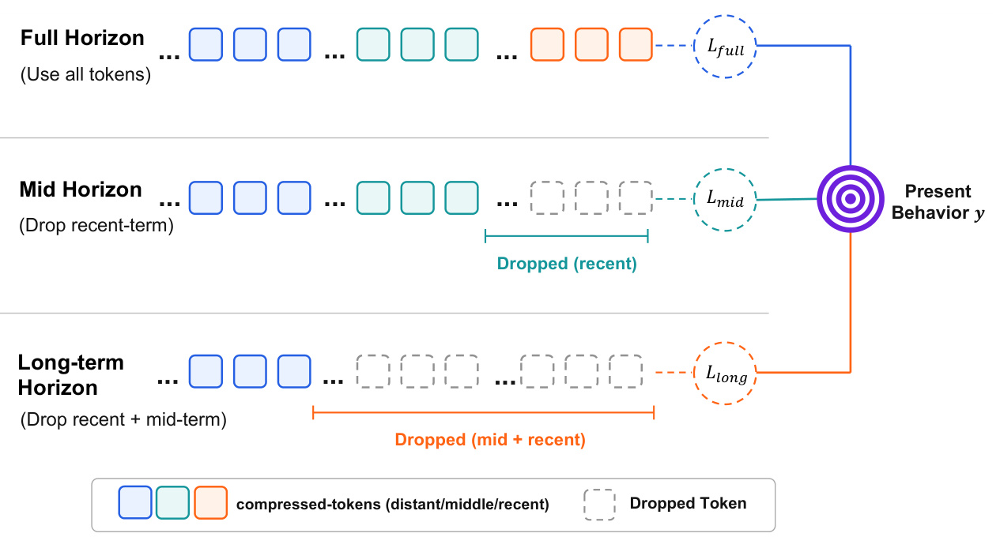
Figure 3 用三条示意分支解释多时间跨度学习。上方分支保留完整的可用历史，中间分支把近期位置变成虚线空框，下方进一步遮蔽中期和近期内容。它们都指向右侧的当前行为目标，但只能从各自保留的信息中作预测。图里三个圆圈代表分支监督路径，核心区别是各条路径被允许利用的上下文，而不是三个互不相关的任务。示意只画出三种跨度，不能据此把实际实验写成三分支；默认实现列出了五个偏移，且每个分支有自己的编码器与查询参数。
遮蔽近期事件的作用是削弱近邻行为这一条容易的预测捷径。假如只对合并后的总前缀施加排序监督，强近期信号可能已经足以降低损失，远期分支便没有足够动力保留信息。图中的独立监督让每条分支都必须产出能预测当前目标的表示，而拼接阶段再让预测头选择和组合这些不同跨度的信息。它不是对远期兴趣一定重要的先验保证：当旧历史与当前需求无关时，这条路径仍可能缺乏信号；论文通过后续遮蔽实验和注意力分析提供经验支持，而不是通过结构就证明长期行为永远有益。
Chronicle Alignment 把这种结构变成预训练任务。摘要将其描述为从更旧历史重构被留出的近期行为，方法的具体数学实现则是轻量目标注意力头对留出目标标签进行二元预测。这里应理解为用近期监督对齐历史表征，而不能扩写成论文没有给出的逐项物品生成或全词表重构。训练阶段先完成对齐，再把压缩器加载进共享排序头；推理时辅助头被移除，在线使用的是分支前缀而不是多个辅助预测值的平均。图中的损失箭头因此属于训练路径，它们不要求每次候选打分再执行一遍对齐学习。
符号解释：$\hat y_j$ 是分支辅助头预测的交互概率，$y$ 为留出目标的观测标签，$\operatorname{BCE}$ 是二元交叉熵，$\bar w_j$ 是归一化后的监督权重，$k$ 为归一化求和索引。特征拼接使用原始权重，损失聚合使用归一化权重，二者位置不同。对齐目标负责把过去压缩成对近现在有用的表示，并通过每个分支的监督保留不同跨度的预测信息。
2.4 下游迁移与异步缓存
下游共享头包括少量预归一化自注意力层与目标注意力读出，候选嵌入作为查询从记忆中取兴趣向量，再与候选拼接交给多层感知机预测。纯压缩模式只输入 Chronicle Tokens；混合模式把它们作为前缀，与短窗口的原始近期事件共同输入。第一阶段对齐预训练后，第二阶段进行排序训练，论文允许压缩器冻结或微调。共享预测头有助于把对比重点放在历史如何转为 token 上，但它不意味着每种方法的所有参数量和处理成本完全一致。
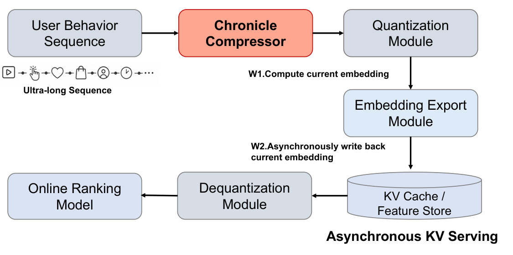
Figure 1 展示计算路径与服务路径的分离。上方从用户行为序列出发，经压缩器得到当前表征，再经过量化和嵌入导出模块异步写入键值缓存或特征存储；下方排序路径读取缓存，反量化后交给在线模型。图中的两个写入步骤分别强调先计算当前嵌入、再异步回写。这使大量候选共享同一份用户记忆，原始长序列编码不必置于每个候选的同步关键路径。图中缓存是用户表征的特征缓存，不能自动等同于语言模型逐层键值缓存的全部更新机制。
这里的解耦成立是因为压缩器不接收当前候选，而候选相关性由读取记忆的排序头处理。即使缓存可共享，不同候选仍可通过目标注意力从不同时间位置取信息，所以缓存不会把所有候选的兴趣激活结果固定为相同向量。另一方面，图也明确引入了表征新鲜度这一系统问题：在线读取的是已完成计算和写入的版本，异步刷新与当前行为之间可能存在时间差。论文未给出刷新间隔、缓存命中率、量化精度或过期策略的详细对照，不能把这张架构图当作这些生产参数已经被完整验证的证据。
在工程迁移中，最值得保留的是“紧凑历史前缀”这个接口：上游压缩器维护长期时间结构，下游沿用已有排序头，并可通过混合模式继续看到细粒度近期事件。这样就能把长序列压缩开销从逐候选路径移开，同时避免所有近时信息都必须等待缓存刷新。这个潜在好处来自接口设计，具体能节省多少在线资源仍需服务压测。论文后面的训练显存和分钟数给出了离线代价，线上业务实验说明表示可被实际系统利用，但两者都没有直接给出逐请求延迟的完整分位数曲线。
3. 实验结果
3.1 数据与训练设置
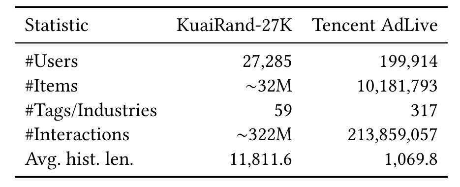
Table 1 左列是统计项，两列数据分别为公开的 KuaiRand-27K 与工业 Tencent AdLive。前者包含二万七千余名用户、约三千二百万物品及约三亿二千二百万交互；后者包含约二十万用户、一千余万物品和约二亿一千四百万交互。两者标签或行业类别数量分别为五十九与三百一十七。最需要关注的是最后一行：平均历史长度约为一万一千八百与一千零七十，这说明两套数据的事件密度和可用历史明显不同。不能把其中一套数据的绝对分数当成另一套数据的难度标尺。
表里的平均长度是原始历史统计，不是训练时实际输入长度。实验正文将 KuaiRand 截断上限定为二千零四十八，AdLive 上限定为四千，并采用左侧补齐。KuaiRand 的原始最长历史可达二十二万八千次，但本文主实验并未直接用这一长度执行全注意力。两套离线任务都以点击为正标签，KuaiRand 明确使用点击字段；这与后面微信朋友圈广告的转化概率线上任务不同。训练采用按用户分组的 GAUC 作为主要准确性指标，比较的是组内排序能力，而非直接报告转化率或成交金额。
模型维度为六十四，视频、作者、标签嵌入配置分别写为六十四、十六、十六；压缩编码器默认四层四头，丢弃率零点一，预测模块两层四头。优化器是 Adam，学习率千分之一、权重衰减百万分之一，线性预热后可选余弦衰减；批大小分别为二百五十六和五百一十二，训练三个轮次并使用早停。原文没有把数据切分时间、随机种子分布、全部冻结与微调选择写成可完整复现实验的配置清单，因此共享训练日程有利于比较，但不能代替这些信息。
3.2 主结果：接近完整注意力的程度
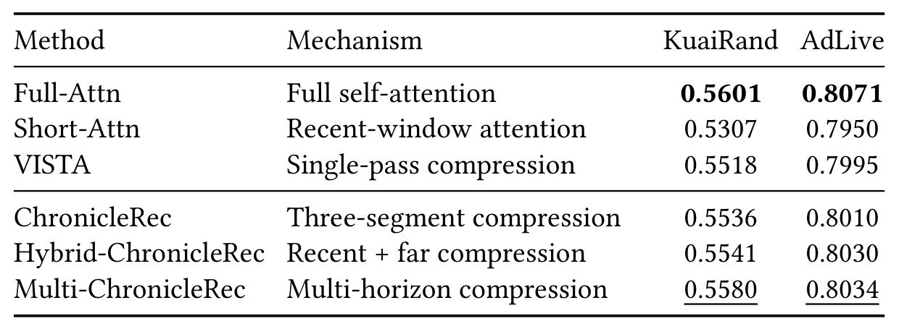
Table 2 的第一列列出模型，第二列概括历史转为 token 的机制，右侧两列是两套数据上的 GAUC。完整注意力在 KuaiRand 和 AdLive 上分别达到 0.5601、0.8071，均为最高；多分支 ChronicleRec 为 0.5580、0.8034，仍分别低 0.0021 和 0.0037。因而最准确的结论是压缩结果接近完整注意力，不能写成全面超过。这里的“完整”仍指截断上限内的历史，而不是全部原始终身记录。表中用粗体标最优、下划线标次优，也直观保留了这个性能顺序。
从短窗口到完整历史，KuaiRand 增加 0.0294，AdLive 增加 0.0121。多分支模型相对短窗分别增加 0.0273 和 0.0084。按这些展示值计算，它回收了完整注意力相对短窗增益的大约百分之九十三和百分之六十九。这是对表格的差值比解读，不是原文新增指标；它说明两个数据集上“保留大部分收益”的程度并不相同。相比只说接近上限，这种差值能更清楚地显示工业集还有可观剩余空间，也避免用 KuaiRand 的较小差距概括所有场景。
压缩方法内部的排序也值得分开读。VISTA 为 0.5518、0.7995，单分支 ChronicleRec 升至 0.5536、0.8010；混合近期原始事件之后为 0.5541、0.8030；再采用完整多时间跨度设计达到 0.5580、0.8034。混合版本在 AdLive 上已经很接近多分支，二者只差 0.0004，而 KuaiRand 上多分支优势更明显。这支持模型收益依赖数据历史结构的判断，但主表没有多次运行误差区间，不能仅凭这些小差值断言统计显著。
共享预测头使对比更接近历史表示构造的控制实验，却不等于排除所有实现差异。短窗模型参数更少，压缩模型还有预训练阶段和不同分支结构。本文展示的结果可以支持选用更有时间结构的压缩方式，但没有与所有目标相关检索方法做同等预算的穷尽比较。落地选择应同时看主表精度、后面的训练成本，以及缓存服务是否适合已有系统。不能把最好多分支分数与最快单分支训练时间拼成一个不存在的“最佳版本”。
3.3 查询位置、信息方向与组件消融
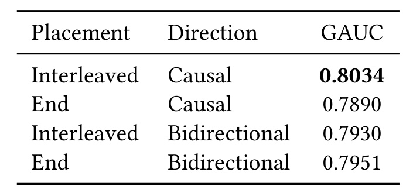
Table 3 把查询位置和注意力方向交叉成四种配置，在 AdLive 上报告最优 GAUC。交错加因果得到 0.8034，尾部加因果只有 0.7890；交错加双向为 0.7930，尾部加双向为 0.7951。在因果条件下，交错位置提高 0.0144；在交错条件下，因果方向提高 0.0104。这两个条件差值说明，查询有不同锚点、且锚点约束可见范围的组合最有利。仅把查询插入序列而不约束其看见未来，并没有带来同样收益；反过来，把全部查询留在尾部再施加因果约束，也不会自然产生不同的历史覆盖。
更细的观察是，双向条件下尾部配置反而高于交错配置，因果条件下则出现相反顺序。这使“交错总是更好”或“因果总是更好”的单因素口号都不准确。表格支持的是两种结构的交互效果：锚点位置决定边界所在，因果方向让边界实际生效。每个查询由此绑定不同时间前缀，减少所有查询反复读取同一完整历史的机会。但这仍是最终排序效果的间接证据，无法仅从四个分数判断每一个查询究竟编码了哪些兴趣类别。
同时必须保留原文的一处数值口径缺口。这里交错双向为 0.7930，下一张组件表的移除因果掩码为 0.7960；两者名字看起来接近，但数值不同，原文没有提供足够配置说明将它们视作完全相同实验。二因素表标明报告最优分数，组件表围绕完整多分支模型移除模块，可能涉及不同实验上下文，但这只是需要核验的方向，不能代作者断定原因。笔记因此分别引用各表，不用其中一组数值替换另一组，也不把不同口径差值拼接成连续增益分解。
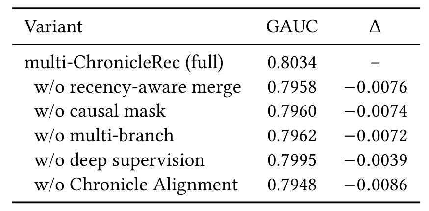
Table 4 以 0.8034 为完整模型基点，右列给出每个移除项的绝对 GAUC 变化。把近因感知合并替换为统一步幅后降至 0.7958；移除因果掩码降至 0.7960；移除多分支降至 0.7962；移除深监督为 0.7995；取消 Chronicle Alignment 为 0.7948。最大下降来自取消对齐，为 0.0086，说明在这一设定下，历史压缩结构本身不足以得到最好的当前预测表示，预训练时把旧历史与近期标签关联起来很重要。深监督的下降相对较小，但仍显示各分支独立学习不是无作用的附属项。
消融应理解为从一个完整系统分别去掉组件，而不是按行累计搭建模型。不同模块的损失不能相加后解释全部收益，因为它们改变的是同一模型中的相互作用路径。例如因果掩码让时间锚点有意义，多分支又改变各锚点能接收到的原始历史；去掉任一项都可能同时影响另一个模块的作用方式。这组结果支持所有已检验组件都有正贡献，但并没有证明每个模块在任意模型和任意数据上都带来相同增益。
另一个必须明确的差别是主表的单分支 ChronicleRec 为 0.8010，而此表移除多分支为 0.7962。它们不能被直接视为同一个分数发生抄写错误，也不能选择更方便的一项用于计算多分支收益。原文没有给出足以对齐两者的训练与超参数细节，故应标为配置口径待核验。同理，取消因果掩码的结果不应覆盖上一张二因素表中的双向交错结果。复现时需要分别保存主比较、二因素比较和模块移除的完整配置，先解释这些差别，再讨论模块贡献的大小。
这张表也提醒对“强制对齐”一词的理解：它是作者主方法的推荐流程，而实验确实包含未对齐压缩器直接用于排序的版本，并且效果仍可测。对齐带来的提升证明训练阶段选择重要，不代表未对齐版本不可运行。原文没有报告所有消融项的显存和时间，因此不能顺着这张表推出每一个模块的性价比；相关资源开销只能在下一节的完整变体效率表中进行有限比较。
3.4 遮蔽近期行为后还剩多少信号
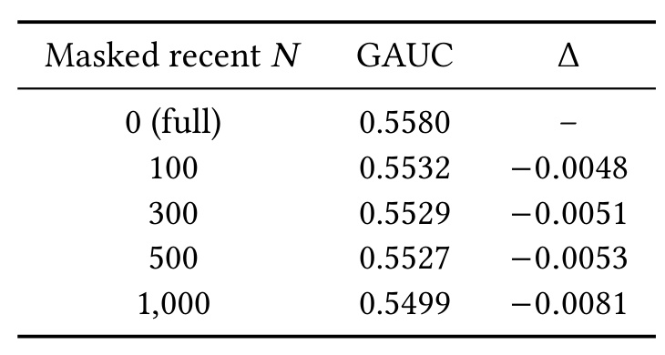
Table 5 在 KuaiRand 上依次隐藏最近零、一百、三百、五百和一千次行为，观察剩余旧历史能支持的 GAUC。全历史多分支结果为 0.5580，隐藏一百次后为 0.5532，此后隐藏三百与五百次分别为 0.5529、0.5527，隐藏一千次后降至 0.5499。结果总体单调下降，证明近期行为确实有预测价值；但下降过程并非突然崩溃，说明较早历史中仍有模型能够利用的信号。尤其在一百至五百的区间内，进一步遮蔽导致的变化相对有限，不能把长期兴趣简化为近期点击的弱复制。
最后一行仍高于 Short-Attn 的 0.5307，但需要纠正原文附近容易误读的比较：实验定义的 Short-Attn 看最近一百次，而此处最终遮蔽的是最近一千次。不能说两者分别看同一个一千事件窗口的内外，从而做严格对称的信息分解。这是不同输入范围、不同表示方式的比较，只能支持旧历史本身有可用信号的有限结论。它还不能说明远期优于近期，因为长历史压缩器和短窗口模型拥有不同的输入规模及学习结构。
3.5 训练成本与服务收益的边界
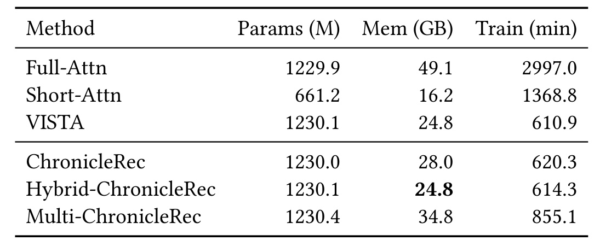
Table 6 的三列依次为百万计的参数、显存占用和训练分钟数，caption 说明显存与训练时间在相同批大小和硬件下测量。Full-Attn 为 1229.9 百万参数、49.1 GB、2997.0 分钟；单分支 ChronicleRec 为 1230.0 百万、28.0 GB、620.3 分钟。用分钟数相除，训练速度约为完整注意力的 4.83 倍，显存约减少百分之四十三。论文所说的约 4.8 倍来自这一行，不能与多分支最高 GAUC 行合并报告。参数总数非常接近也表明收益不主要来自把全模型规模大幅减小，而是长序列计算方式改变。
混合版本的显存为 24.8 GB，时间为 614.3 分钟；多分支版本需要 34.8 GB 和 855.1 分钟。后者相对完整注意力的训练加速约为 3.50 倍，相对单分支则增加约百分之三十八的训练时间。这里是多跨度精度收益需要付出的成本。VISTA 的时间为 610.9 分钟、显存 24.8 GB，说明目标无关压缩这一大方向已经承担了大量降本，ChronicleRec 的主要新增价值需要结合精度与时间结构来判断，而不能声称比所有压缩基线快数倍。
短窗模型虽只有 661.2 百万参数、16.2 GB 显存，训练时间却为 1368.8 分钟，长于几种压缩版本。表格给出这一测量结果，但没有足够细节把它归结为某个具体算子、吞吐设置或早停行为；应保留原始观察，不擅自编造原因。论文写的是训练总时间，也未将对齐阶段、下游训练和缓存构建的成本逐项拆开。因而复现时应先确认计时起止、预训练是否包含及硬件型号，再把这些数字移植到内部成本模型。
服务阶段，缓存使超长序列编码不必每候选执行，这是结构上的明确好处；但在线总体延迟仍受特征读取、缓存新鲜度、反量化以及排序头等影响。效率表没有给出在线延迟分位数、吞吐、缓存规模或更新频率，不能把 4.8 倍写成在线广告请求的加速倍数。最稳妥的表达是单分支在所报告训练设置中显著降低时间与显存，多分支以更多训练资源换取更高 GAUC，而可缓存接口为在线成本解耦提供条件。
3.6 时间组织、注意力利用与累计信息
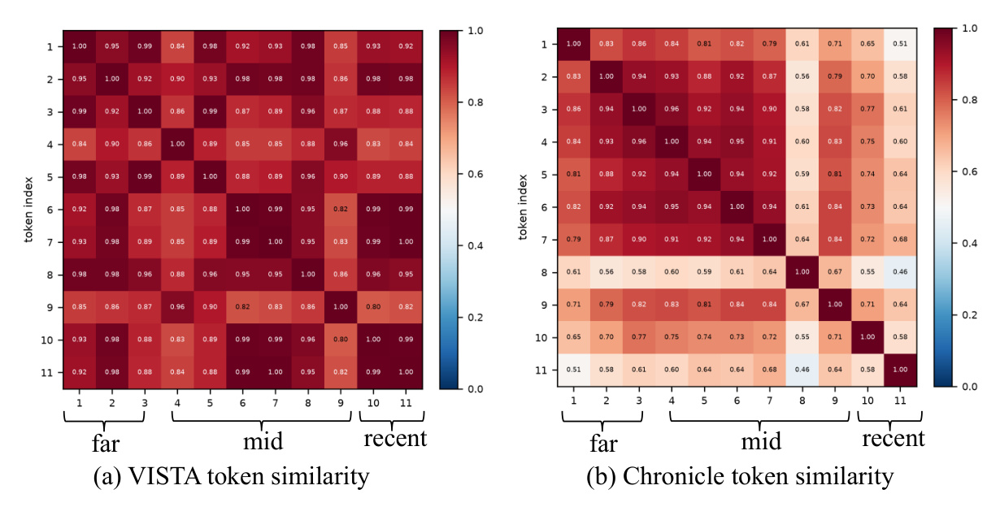
Figure 4 左右分别是 VISTA 和 ChronicleRec 的 token 相似度矩阵，横纵轴都为位置索引，底部用远、中、近区域标出时间次序。对角线为自身相似度，接近一是必然现象，真正有意义的是非对角区域。左图大量非邻近位置仍呈深红色，提示不同查询可能提取相近的全局信息；右图在不同时间区域之间出现较浅颜色，早期位置内部仍较相关，而跨区域尤其与较晚位置之间的相似度降低。这与因果交错形成不同历史前缀的设计一致。
但颜色分块不是独立兴趣的数学证明。查询感受野本就嵌套，相邻或同段表示相关是合理的，较低余弦相似度也不自动代表更高预测质量。图能提供的是表示几何上的辅助证据，需要与主结果及后面的信息增量分析一起解释。原文没有给出这张热图的多用户抽样稳定性和误差范围，因此不应从它推断所有用户都形成相同分块，也不应将某个浅色格子的变化直接转化为业务收益大小。
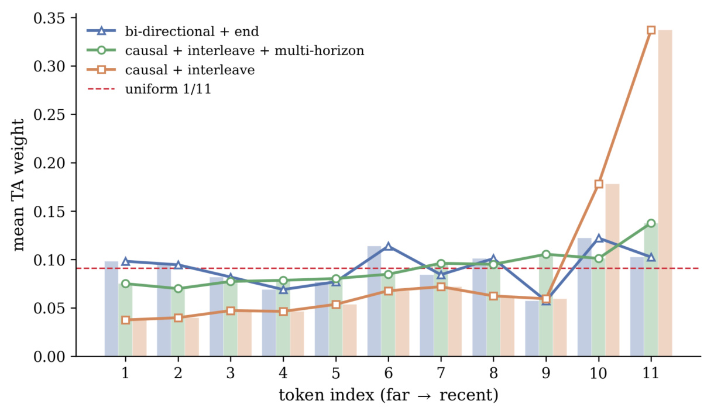
Figure 5 的横轴从最远到最近排列十一个位置，纵轴为目标注意力权重，红色虚线对应均匀分配的一除以十一。橙色的因果交错单跨度曲线在最后两个位置明显升高，最近位置约占三分之一的总权重；绿色多时间跨度曲线则把较多权重分配到更广的位置范围，远中期位置没有全部被压到接近零。蓝色尾部双向基线也在若干位置接近均匀，但它的槽位次序并不等价于因果模型的真实时间锚点，因此不能只看曲线平坦程度来判断时间建模更好。
这张图回答的是下游是否使用了保留下来的多跨度信息，而不只是压缩器是否输出不同向量。多分支下中远位置仍获得权重，与独立遮蔽监督的动机吻合；但注意力权重不是因果贡献度，移除一个 token 后效果如何仍需单独干预实验。原文明确以代表用户展示，不能把最近位置三分之一的质量推广成总体平均结论。图例与位置分布适合用来解释一个案例，对全部用户群的稳定收益仍以主表和线上实验为主要依据。
进一步看 token 是否提供前缀尚未包含的信息，论文在公式六定义去偏的累计互信息估计，并在公式七给出真实互信息的链式差分关系：
符号解释：$\mathbf c_{1:p}$ 是从第一个到第 $p$ 个 token 的前缀，$y$ 是预测目标，$\widetilde I$ 是去偏互信息估计，$\widetilde I_p$ 是加入该前缀后的估计信息量。交错模型按由远及近累积，尾部双向模型只能按固定查询槽位顺序累积，两种横轴顺序的语义不同。
符号解释：$I$ 是真实互信息，右侧为已知前面所有 token 后，第 $p$ 个 token 与目标之间的条件互信息。它说明前缀曲线的增量可解释为新增信息，但有限样本估计不必严格单调，也不能把图中估计值无条件当作精确的信息论量。
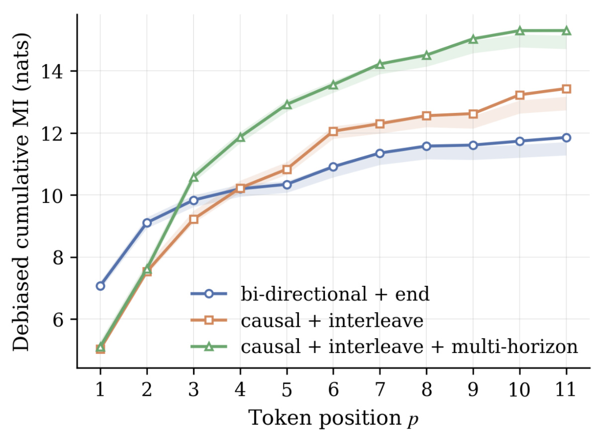
Figure 6 用蓝、橙、绿三条曲线比较尾部双向、因果交错以及加入多时间跨度的构造，横轴是累积位置，纵轴标为去偏累计互信息。蓝线在开始几个槽位增长较快，随后增幅收窄；橙线在后半段继续增加，最终高于蓝线；绿线在大部分范围内最高。曲线形状支持一个比“token 不一样”更贴近目标的判断：不同时间可见范围可能让后续位置继续带入前缀尚未覆盖的预测信号，多时间跨度又进一步增强这种趋势。
不过，正文没有充分披露互信息估计器、去偏程序、抽样数量和阴影区域的统计定义，且纵轴以 nats 标注的绝对数值不适合直接当作二元点击标签的真实互信息来解读。最安全的使用方式是按作者建议比较趋势，不把纵轴高度解释成已严格测得的标签信息容量。论文还在讨论中提到有效秩分析，但九页正文中没有对应独立有效秩图表或具体数值；因此本笔记只保留可看到的相似度、注意力和累计信息证据，不补造额外实验。三张分析图共同增强解释可信度，却不能替代严格的机制因果验证。
3.7 七日线上实验
线上部署在微信朋友圈广告的转化概率预测场景，生产模型采用 MixFormer，同时建模非序列特征 token 与序列行为 token。Chronicle Tokens 被接入这两条路径，让长期行为信息进入现有排序系统，而非整体替换主架构。论文报告七日 A/B 实验，GMV 相对提升 1.61%，百分之九十五置信区间为 [0.678%, 2.547%]，区间不含零，支持该实验窗口内的显著正向业务变化。这里的提升是成交金额指标，不是点击 GAUC 提升，也不是转化率绝对增加一点六一个百分点。
线下点击标签、线上转化概率模型、最终 GMV 指标分属不同层级，不能直接相互换算。七日结果是有价值的生产证据，但原文未充分披露流量比例、分流单位、日度走势和长期留存等细节，也没有将缓存量化、两条 token 接入路径和压缩器各自的业务贡献拆开。因而它证明了这套接入方案在所述线上实验中有效，不能证明所有业务、所有季节或任意更新策略都会获得同等收益。后续若评估内部迁移，应优先复核标签链路与线上实验设计，再讨论数值能否外推。
4. 总结
4.1 我的判断
ChronicleRec 最值得借鉴的部分，是把用户长期记忆的组织方式作为可独立优化的对象。它既保留候选相关的目标注意力，又让昂贵历史编码可以按用户复用；在这个接口之上，用时间不均匀的输入压缩、带因果感受野的查询和不同遮蔽跨度构建短序列。主实验支持这种组合比短窗口和单次全局摘要更有效，同时显示其精度仍低于完整注意力。因此这是一项效果与成本之间有明确交换关系的工作，不能把“接近全注意力”改写成无损或更强。
从我对实验的理解看，对齐训练比缓存本身更值得在迁移时认真保留。缓存决定何时计算，不能确保计算出的向量有用；对齐要求旧历史对近期标签有预测性，多分支监督又避免所有表达都依赖最近事件。实际应用中，如果只把长序列压成多个向量然后直接接入排序，却取消相应预训练与遮蔽学习，就已经偏离论文取得最佳结果的机制组合。Table 4 中最大的退化来自取消对齐，正好为这个判断提供了直接但限定于该设定的依据。
4.2 局限与复现风险
第一，历史长度仍有上限。原始用户记录可以非常长，但实验只到二千零四十八和四千事件，无法据此推断十万级输入下合并、训练与缓存刷新同样有效。第二，配置说明不够闭合。主表单分支与消融去多分支的分数不同，二因素双向交错与去因果掩码也不同，复现者必须保留差异并查明条件，不能自动对齐。第三，图示写线性注意力而默认配置写因果 Transformer，具体算子需要代码或作者确认，复杂度主张应避免跨实现搬用。第四，表征分析的覆盖有限：代表用户注意力、相似度热图和去偏互信息趋势缺少充分采样说明，不能当成总体因果证明。
第五，生产资源证据仍不完整。训练分钟数不能替代线上延迟，缓存刷新间隔、量化误差和特征版本漂移都可能改变真实收益。第六，线上窗口只有七日，GMV 置信区间支持这段实验的正向结果，但不足以说明长期稳定性，也不能直接对应离线点击任务的变化。第七，原文尚无独立代码入口，数据切分、随机种子、预训练计时边界等信息仍影响外部复现。这些缺口不否定已报告结果，却限制了结论可迁移的范围和工程估算的精确程度。
4.3 后续跟进
后续首先应取得主表、二因素表和消融表的逐项配置，重点核验单分支训练路径与去因果设置为何不一致。这个问题优先于继续调大模型，因为若基线条件没有对应关系，新增实验无法清楚归因。其次应在固定输出 token 总预算和相近训练成本下比较单分支、混合与多分支，判断收益有多少来自不同时间监督，有多少来自更多输出容量；原文五分支拼接增加长度，现有结果未完全隔离这一因素。第三应做缓存新鲜度与量化精度的敏感性测试，把表示效果与真实服务约束连接起来，尤其观察近期强意图用户是否更依赖混合原始窗口。
最后，值得增加按历史长度、活跃度和兴趣变化程度分组的评估，以及针对远期 token 的删除干预。前者能回答哪些用户最受益，后者能比注意力曲线更直接检验远期记忆是否决定预测。若取得更长线上窗口，也应同步检查转化模型校准、流量构成和 GMV 日度稳定性，使结果从单次显著提升进一步走向可解释的稳定收益。在这些问题补齐前，本文可以作为长期兴趣表征设计的具体参考，其最可靠的结论仍是：时间结构与任务对齐能改善可缓存压缩表示，但精度、容量、训练成本和服务时效需要共同衡量。